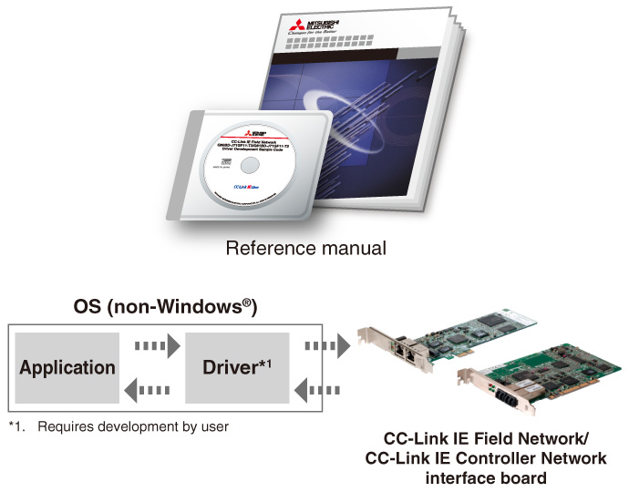
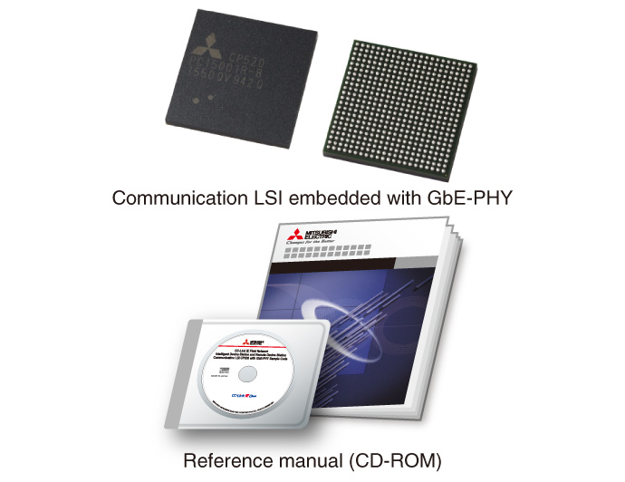
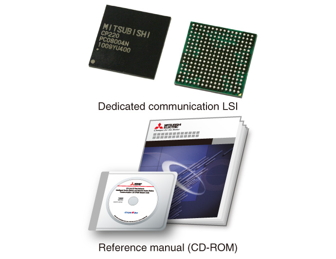

Network-related products |
Programmable Controllers MELSEC
Alat Pengembangan CC-Link IE

Alat pengembangan
Pengembangan driver papan antarmuka jaringan
- Manual referensi (untuk mengembangkan driver untuk berbagai sistem operasi) diberikan kepada pelanggan yang ingin menggunakan papan antarmuka jaringan dengan sistem operasi selain Windows®
- Manual referensi ini berisi contoh program C, yang bertujuan untuk menghemat waktu dan biaya pemrograman pengembang

| Manual name | Manual number |
|---|---|
| CC-Link IE Field Network Q80BD-J71GF11-T2/Q81BD-J71GF11-T2 Driver Development Reference Manual | SH(NA)-081155ENG |
| CC-Link IE Controller Network Q80BD-J71GP21-SX Driver Development Reference Manual | SH(NA)-080819ENG |
Komunikasi LSI tertanam dengan GbE-PHY CP520
- CP520 mendukung pengembangan stasiun perangkat cerdas CC-Link IE Field Network dan stasiun perangkat jarak jauh, tanpa memerlukan pengetahuan mendalam tentang protokol
- CP520 adalah LSI komunikasi terintegrasi yang tertanam dengan komunikasi ASIC CC-Link IE Field Network, MPU, dan GbE-PHY
- LSI komunikasi terintegrasi menghemat waktu dan biaya pemrograman pengembang yang terkait dengan MPU dan GbE-PHY

| Type | Model | Packaging unit |
|---|---|---|
| Communication LSI embedded with GbE-PHY CP520 |
NZ2GACP520-60 | 60 pieces |
| Type | Manual number | Manual name |
|---|---|---|
| Reference manual | SH(NA)-081570ENG | CC-Link IE Field Network Intelligent Device Station Communication LSI Embedded with GbE-PHY CP520 Reference Manual |
Komunikasi khusus LSI, CP220
- CP220 mendukung pengembangan stasiun perangkat cerdas CC-Link IE Field Network dan stasiun perangkat jarak jauh, tanpa memerlukan pengetahuan mendalam tentang protokol
- CD-ROM manual referensi berisi kode contoh program C dan contoh rangkaian (PDF), yang bertujuan untuk menghemat waktu dan biaya pemrograman pengembang

| Type | Model | Packaging unit |
|---|---|---|
| Dedicated communication LSI CP220 |
NZ2GACP220-60 | 60 pieces |
| Type | Manual number | Manual name |
|---|---|---|
| Reference manual | SH(NA)-082461ENG | CC-Link IE Field Network Intelligent Device Station and Remote Device Station Communication LSI CP220 Reference Manual |
Untuk harga dan keterangan lebih lanjut, silakan hubungi kantor Mitsubishi Electric setempat atau perwakilan penjualan.
Keanggotaan (keanggotaan reguler, eksekutif, atau dewan) CC-Link Partner Association (CLPA) diperlukan untuk membeli pengembangan yang menggabungkan LSI komunikasi yang disematkan dengan GbE-PHY, CP520, dan LSI komunikasi khusus, CP220.
URL CC-Link Partner Association: https://www.cc-link.org